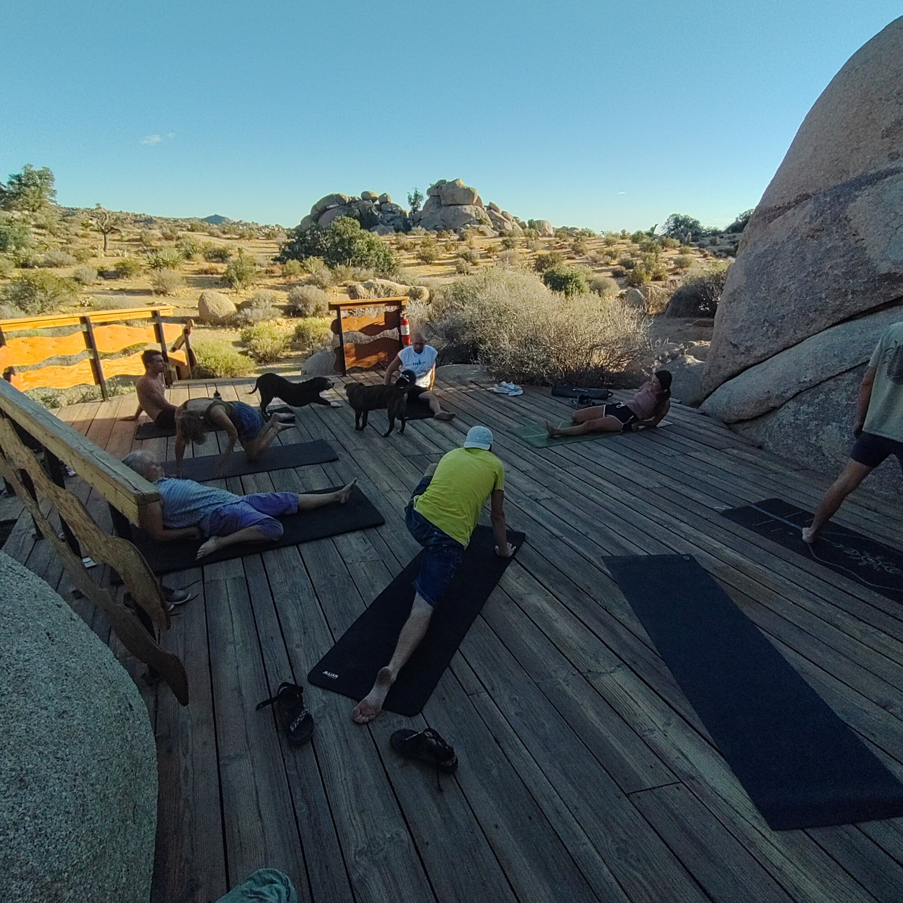
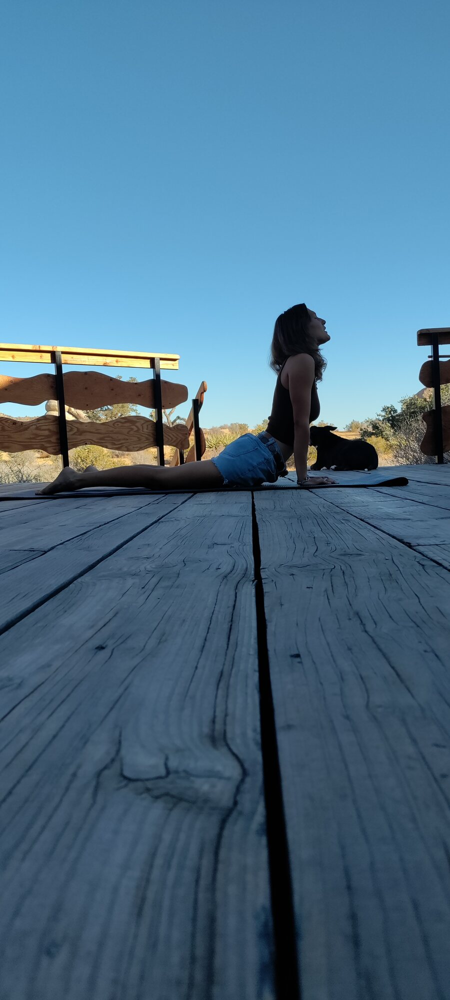
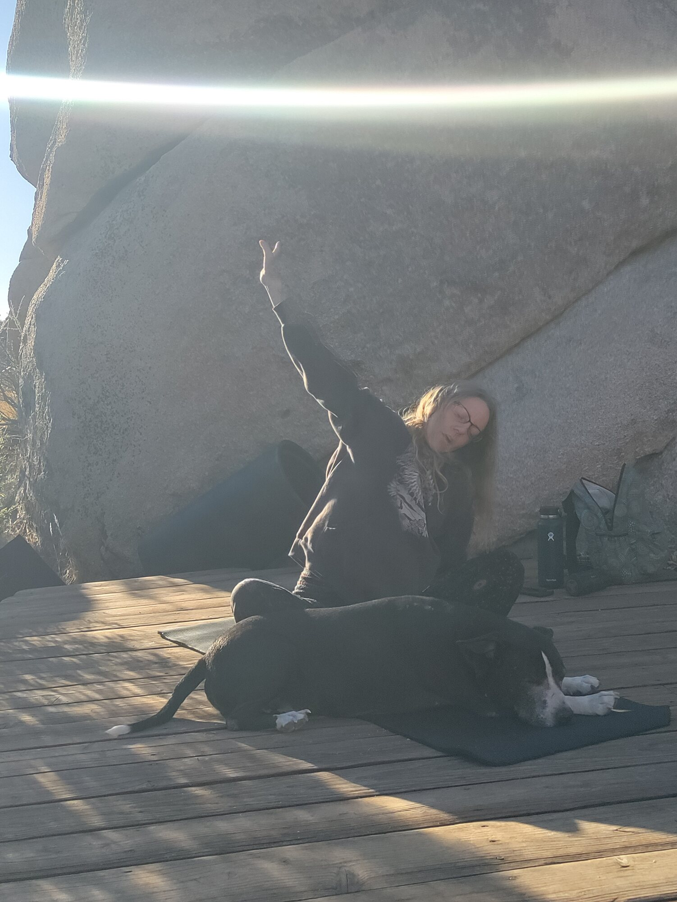
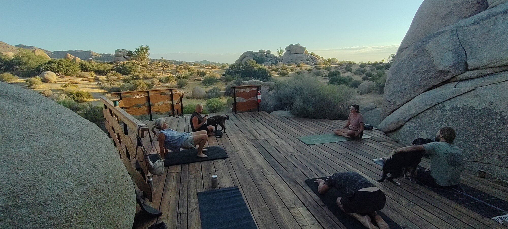
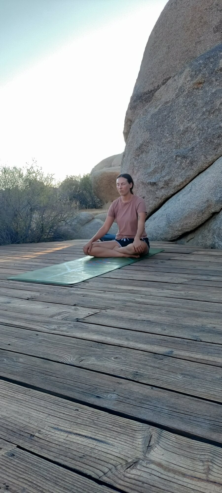
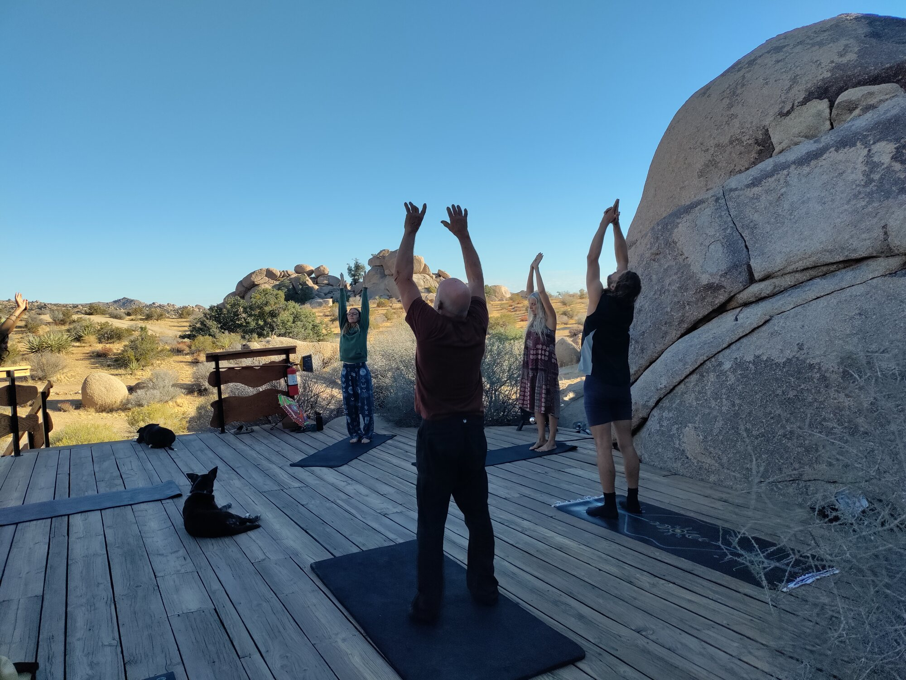
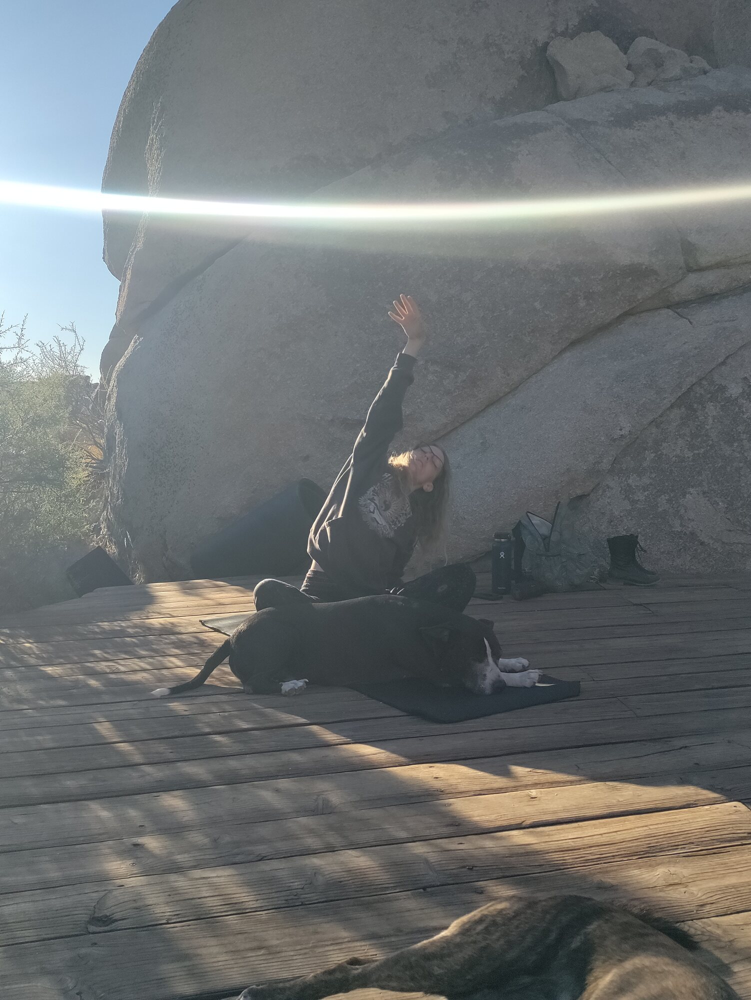

Field Report 025 · People & Community
Yoga at
Boulder
Gardens
Yoga at Boulder Gardens We usually start at around 7 am and about 5 of us attend.

Yoga at Boulder Gardens
We usually start at around 7 am and about 5 of us attend. Shayna usually leads, and maybe Malia (who was the one who suggested yoga in the first place)
Photographic Record
The work, seen in place
Selected photographs from the private FieldStation source record.






System Thread
Related Fieldstation records
Public synopsis derived from Boulder Gardens Fieldstation Workbook source record FR025. Detailed equipment records, calculations, unresolved questions, and corrections remain in the workbook.